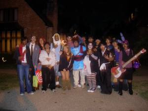

My Friends
My Friends
A film I created summer of 2026. It speaks on the issue of a forgotten language, my forgotten language. K'iche. This film showcases issues brought up from the past and future about not continuing a legacy left behind, a legacy that is meant to flourish.

Reel Works Film: LEGACY
My film was one of my greatest and proudest achievement of mine because it was something that got me out of my comfort zone. I was always interested in film making but I was never given much opportunity to make or create anything. Ms.Cruz my amazing shop teacher introduced me to this program that her daughter also participated in. It was the Reel Works film festival program. In the first 2 weeks they introduced us to different camera mechanics, how to use a tripod and ideas that we wanted our film to be about. I wanted my idea to show language, tradition, my country and overall spread awareness on languages that may be forgotten or not practiced often. This program taught me so many things and even when it got difficult I made sure to persevere. In the end all the hard work paid off because my film was chosen to be in the big screen at the Manhattan theatre.
Skills:Python skills: Def, For loops, if,else,elif,random.randint, While loops, frame, collaboration.